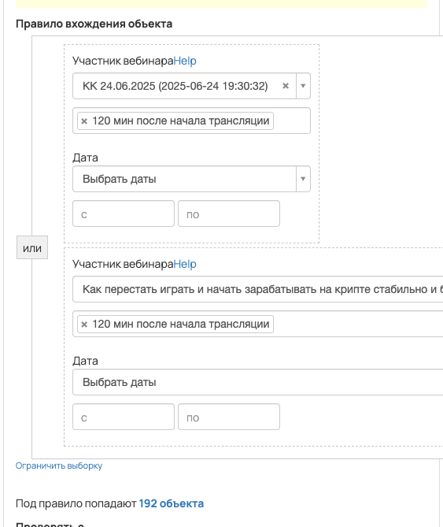
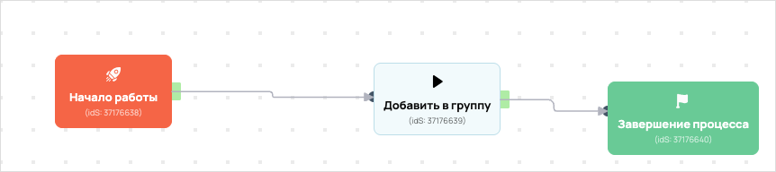

Бонусы тем, кто досидел до конца вебинара
- ID процесса:
2144749 - Объект: Пользователи
- Статус: Ожидание событий
- Внутренняя страница: 2144749. Бонусы тем, кто досидел до конца вебинара
- GetCourse: Карточка | Схема процесса
Скриншоты процесса


Коротко для заказчика
- Главное: В процесс попадают пользователи по правилу: Участник вебинара или Участник вебинара.
- Дальше он передает данные как: тип передачи не определен.
- Связанных баз Vakas: 0.
Понятное описание процесса
- Процесс работает с объектом GetCourse: Пользователи. Текущий статус процесса: Ожидание событий.
- На вход попадают данные так: В процесс попадают пользователи по правилу: Участник вебинара или Участник вебинара.
- Дополнительные условия внутри схемы не извлечены: процесс идет напрямую по основной ветке или условия не подписаны.
- В разобранной схеме не найден прямой вызов Vakas. Если процесс должен передавать в amoCRM, его нужно проверить вручную.
Ход процесса в GetCourse
- Схема состоит из 3 блоков и 2 переходов.
- По типам: стартов 1, условий/ожиданий 0, вызовов URL 0, изменений полей 0, финалов 1.
Блоки процесса: что делают и зачем нужны:
- Блок
37176638«Начало работы» (старт). Что делает: Запускает выполнение схемы для объекта, который попал под правило входа процесса. Зачем нужен: Нужен как точка входа: от него GetCourse начинает движение объекта по схеме. Дальше: если результат «Выполнено», идет в «Добавить в группу». - Блок
37176639«Добавить в группу» (операция user_addtogroup). Что делает: Выполняет служебный шаг схемы «Добавить в группу». Зачем нужен: Нужен как промежуточный технический шаг в схеме «Добавить в группу». Дальше: если результат «Выполнено», идет в «Завершение процесса». - Блок
37176640«Завершение процесса» (завершение). Что делает: Завершает ветку процесса после выполненных проверок и действий. Зачем нужен: Нужен, чтобы закрыть текущую ветку и не гонять объект по процессу повторно. Дальше переходов нет: это конечная точка ветки.
Что именно входит в процесс
- В процесс попадают пользователи по правилу: Участник вебинара или Участник вебинара.
Как именно настроено правило
- Участник вебинара или Участник вебинара
Куда и как передается дальше
Вызовы Vakas в схеме процесса не найдены.